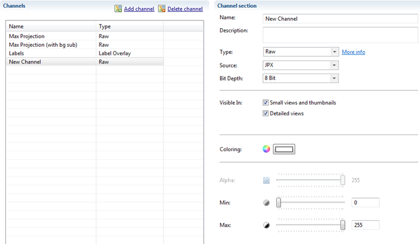

The Image Settings are the general settings for the display of Well Images, Cell Images, ...

General Image Settings
| Default image scale (1/x) | Determines the scale of an image when initially shown in the well viewer. Scale is based on 1 divided by the provided value. |
| Gamma | Determines the Gamma amount on the image. The default gamma value is 1.6 |
| Pixel size (µm² per pixel) | Determines how many µm² is used in transforming pixels based measurements into micron based values. The default value is X: 1 - Y: 1 - Z: 1. |
Channels
The Channels are the different visible layers of information. To add a new layer click the "Add channel" link.
The Channel Section will open. Here you can adjust the settings for the new layer.

| Name | The name of the channel |
| Description | The description of the channel |
| Type | The type of the channel (click the "More info" link to get more information for each type) |
| Source | The source of the channel (JP2K are pictures, HDF5 are statistic values) |
| Bit Depth | Determines the quality of the channel (Higher Quality = Lower Performance) |
| Visible In | Determines in which views the channel is visible |
| Coloring | Defines the color of the Channel |
| Alpha | Determines the transparancy |
| Min | Determines the minimal intensity |
| Max | Determines the maximal intensity |
Edit Channel
Editing Channels use the same principles as the "Add Channel" functionality
Delete Channel
You can delete a channel by selecting it in the list followed by clicking the "Delete channel" link.